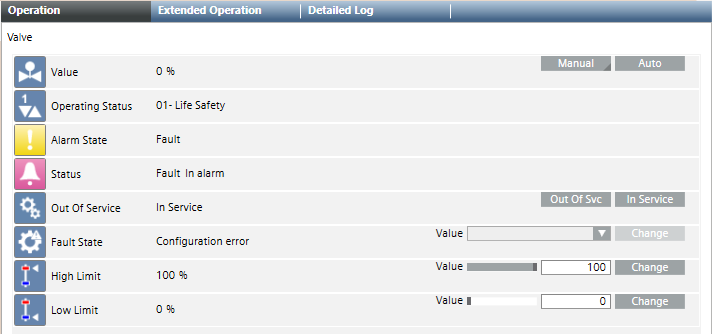

User Roles and Configuration Aspects
User Groups and Tasks
Object Model, Function, and Instance Applications | |
User Role | Tasks |
HQ librarian | Creates extensions for:
|
RC librarian | Defines extensions for:
|
Project engineer System house engineer | Defines extensions for:
|
Commissioning engineer | Modifies Function for:
|
Operator | Defines extensions in the Object Configurator, including:
|
Definition
The following information must be defined in Object Models, Functions, and Objects for operating and monitoring to function properly:
- View of individual object properties
- Sequence of object priorities in the Operation and Extended Operation tab
- Visibility of object properties in the Operation and Extended Operation tab
- Visibility of object properties in Graphics
- Visibility of object properties in Configuration
- Assign icon
- View of individual object properties in the BACnet Configurator
- Display object texts
- Discipline category
- Search criteria
- Attribute texts
- Translations
- Configuration of the Status and Commands window for the graphic
- Visibility of object properties in Graphics
- Alarm configuration
- From the field system.
- Created on the management platform
- Command objects
- Acknowledge alarm
- Change of values
- Symbol selection for a graphics page
- Drag-and-drop selection
- Graphic templates
- Security (rights and privileges)
- User groups, which can then be used for security settings
- Recording values
- Organizing related items
Examples of Configurations to be Created
- Command objects
- Operation in the Operation tab
- Status and Commands window for the graphic
